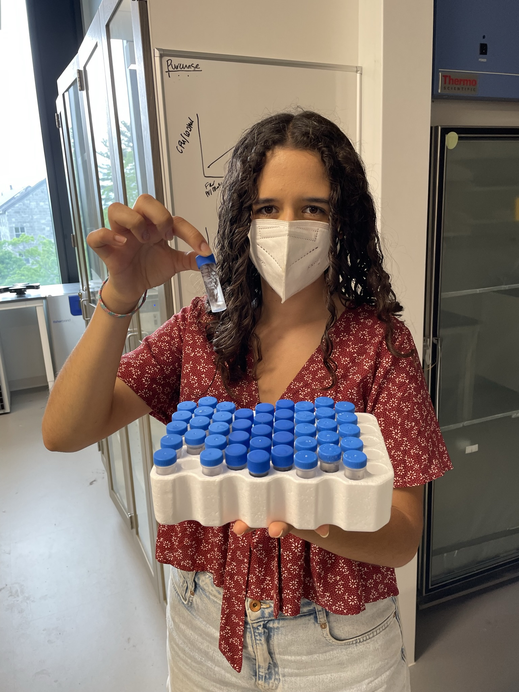
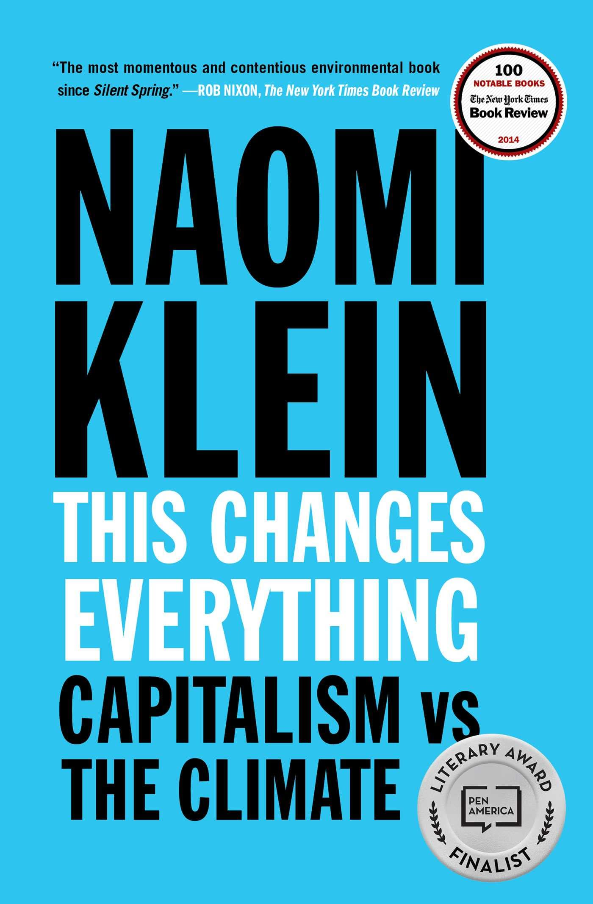
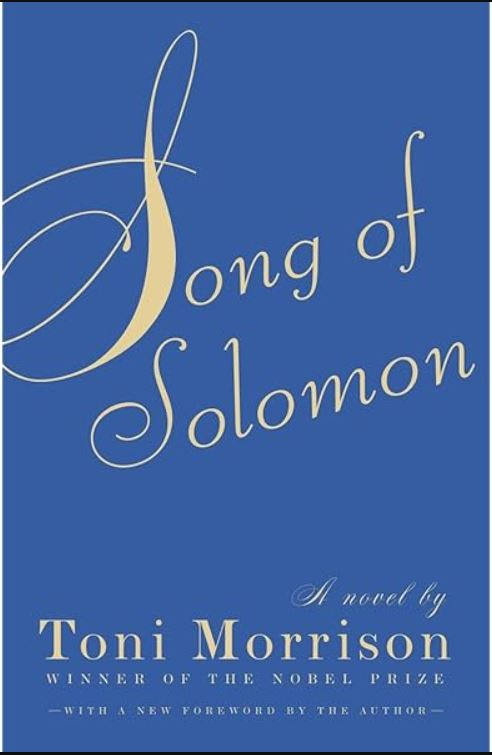
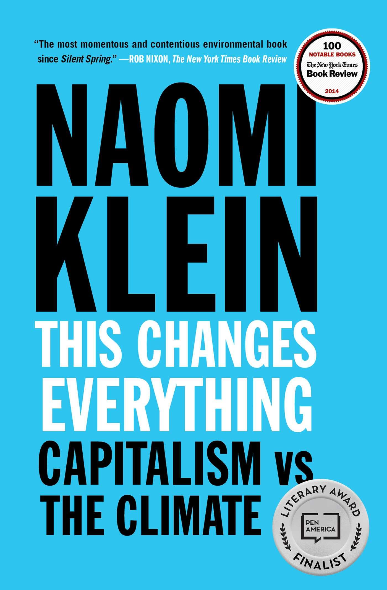
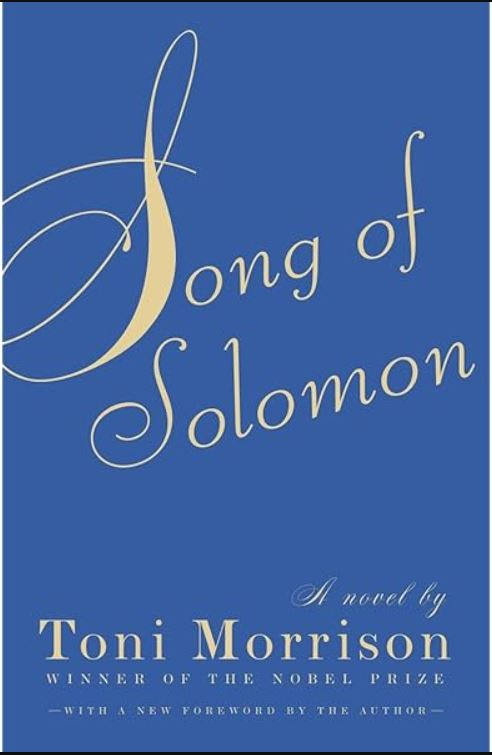

INTERESTS
RESEARCH INTERESTS
 I was born in Mexico City and lived there until I was 13. When I was a kid, many years before we moved to the US,
my dad started a cooperative, initially composed of a small network of organic farmers from rural
areas across the country. Frustrated by the fact that distributors, supermarket chains, and other middlemen took the majority
of the profits while farmers received just pennies on the dollar, his goal was to create a direct avenue for these farmers to
sell their produce and products to consumers in the city. With farmers at the heart of his operation, constant communication and
travel were necessary. Curious to see other parts of the country, I eagerly accompanied my dad whenever possible. He wanted to
expand my worldview and expose me to the realities faced by much of the population outside of Mexico City. Rural Mexico, rich with
local folklore and Indigenous culture, was a world far removed from my urban daily life.
I was born in Mexico City and lived there until I was 13. When I was a kid, many years before we moved to the US,
my dad started a cooperative, initially composed of a small network of organic farmers from rural
areas across the country. Frustrated by the fact that distributors, supermarket chains, and other middlemen took the majority
of the profits while farmers received just pennies on the dollar, his goal was to create a direct avenue for these farmers to
sell their produce and products to consumers in the city. With farmers at the heart of his operation, constant communication and
travel were necessary. Curious to see other parts of the country, I eagerly accompanied my dad whenever possible. He wanted to
expand my worldview and expose me to the realities faced by much of the population outside of Mexico City. Rural Mexico, rich with
local folklore and Indigenous culture, was a world far removed from my urban daily life.
These formative childhood experiences, coupled with an obsession with NatGeo WIld documentaries, sparked my ecological curiosity.
While I cannot claim an unbroken commitment to socio-ecological studies from that early age, those experiences left a lasting
impression. Many of my colleagues in fisheries science have a deep connection to water, having grown up near coasts or large bodies
of water. While I don’t share that connection with marine environments, I feel a similar bond with degraded terrestrial ecosystems
(sad as that may sound), coming from a big city where that was the only kind of “nature” I was surrounded by on a day-to-day basis.
I reconnected with this part of myself during college, particularly in an ecosystem ecology course that introduced me to the study
of soils and rhizosphere processes. I was compelled by a field that was so dynamic, scalable, and intersectional. When I heard the
professor teaching the class was setting up her Soil Microbiology and Arctic Forests lab, I reached out to inquire about research
assistant and thesis student positions.

During my undergraduate thesis, I became intrigued by how small-scale processes, such as microbial nutrient cycling, have
far-reaching implications for climate change. I began exploring how root traits and soil microbial communities influence ecosystem
responses to disturbance, how they adapt to varying water and nutrient availability, and, in turn, affect nutrient cycling. I also
developed a general interest in the relationship between plant functional traits and seedling recruitment. However, the observational
nature of my thesis, which focused on describing trends and lacked a field component, occasionally made me feel disconnected from my
work. There was no clear downstream objective to inform management or policy.
My love for learning was reignited by my experience as Assistant Lead of a field crew conducting post-fire surveys in the Southern
Sierra Nevada. We collected a wide range of data related to the regeneration of Giant Sequoia and mixed conifer groves. After spending
years frustrated by academic abstraction, the immersive hands-on work helped me reconnect with a grounded curiosity. It also generated
a number of questions about overlooked ecological processes–namely, the absence of soil or root sampling in the protocol. Realizing
that my first instinct was to design a follow-up project was incredibly reaffirming.
This blend of experiences led me to reflect deeply on ecosystem resilience and post-disturbance recovery. I developed a profound interest
in climate adaptation research, particularly because it centers environmental justice and encourages us to consider diverse forms of
socio-ecological knowledge. How can plant-soil research enhance our understanding of healthy ecosystems? How can I better understand
the meaning of responsible and equitable socio-ecological restoration? How can we design studies that isolate functional mechanisms
while maintaining a holistic ecological perspective? How do we translate small-scale findings to heterogeneous environments? Who benefits
from studying these dynamics? How can I find my niche in this space, and how can this research contribute to policy-level change?
PERSONAL INTERESTS
I am passionate about a wide range of hobbies, and with each move to a new place or new acquaintance,
I find new interests to love.
At the core of who I am are painting, reading, running, and dancing.
I’ve been drawing, painting, and doodling since I was a toddler, encouraged by my artistic parents to
explore creative expression. Visual arts have helped me understand both the benefits and challenges of
perfectionism, while also fostering my attention to detail.
Dancing, on the other hand, allows me to let go of control and trust my instincts. It’s a form of expression
that reconnects me to myself and grounds me, while also offering a space for building community. The inclusive
and collaborative dance spaces I’ve been part of have influenced the energy I bring to other group settings.
Running provides a meditative escape, helping me relax and de-stress, while also allowing my driven side to
flourish. What started as a way to carve out time for myself has become a disciplined practice that helps me stick
to routines and long-term goals.
Reading has also become a regular part of my life again. I set aside time every weekend to read and annotate books,
and I listen to audiobooks while I run or work. One of my coworkers and I even started a sci-fi book club, which has
been a great way to exchange ideas and perspectives across generations, challenging me to think critically and stay
open-minded. Below are some of my favorite books, including a few that, while not light reads, have profoundly shaped
my thinking. Some were assigned in class, and although I only read certain sections, certain themes and concepts
importantly informed the perspectives I have today.
 


